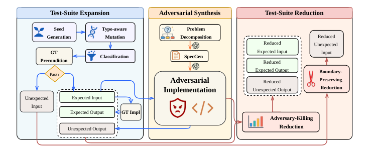
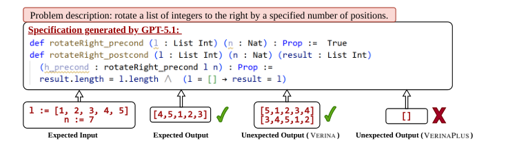

Expands and reduces test suites for the Lean 4 Verina benchmark, validating inputs and specifications via Lean v4.24.0 execution and #check.
Abstract
As large language models (LLMs) are increasingly deployed for software engineering, constructing high-quality benchmarks is crucial for evaluating not just the functional correctness, but also the formal verifiability of generated code. However, existing benchmarks are limited by the quantity and quality of positive and negative test cases, leading to an overestimation of model capabilities in generating specifications and implementations. To address this, we propose VeriScale, a novel framework driven by the adversarial implementations. It consists of two stages: test-suite expansion to construct diverse and challenging test cases, and test-suite reduction to distill them into compact yet discriminative suites. While VeriScale is general, we instantiate it on Verina to construct VerinaPlus, which expands the original test suites by over 83$\times$, and VerinaLite, a lightweight 14$\times$ variant. Our experiments across eight state-of-the-art LLMs demonstrate that VerinaPlus exposes substantial model weaknesses hidden by the original benchmark, evidenced by sharp score drops on both SpecGen and CodeGen tasks, whereas VerinaLite maintains this discriminative power at a fraction of the evaluation cost. The enhanced benchmarks and source code are publicly available at https://github.com/XiaoyangLiu-sjtu/VeriScale.
Problem
Benchmarks for verifiable code generation in Lean, such as Verina, include few positive and negative test cases. As a result, they overestimate how well LLMs generate specifications (SpecGen) and implementations (CodeGen).
Approach
VeriScale works in two stages. Test-suite expansion uses LLM seed generation and type-aware mutation of Lean input types, then synthesizes adversarial implementations to produce expected input-output pairs, unexpected inputs and unexpected outputs. All candidates are validated by Lean execution and the #check command on preconditions. Test-suite reduction then keeps a compact subset that still kills the adversarial implementations.

Figure 1: Overview of the VeriScale framework for adversarial test-suite scaling. Driven by the adversarial implementations, the framework scales verifiable code generation benchmarks through two core stages: test-suite expansion to ensure rigorous boundary coverage, and test-suite reduction to optimize evaluation efficiency without sacrificing discriminative power.
Results
Applied to Verina, VeriScale produced VerinaPlus, with test suites over 83x larger, and VerinaLite, a 14x variant. Across eight LLMs, VerinaPlus raised failure counts by an average of 1.80x on SpecGen and 1.50x on CodeGen, exposing hidden weaknesses. VerinaLite keeps much of this discriminative power at lower cost.

Figure 3: Case study of a flawed specification on Verina #advanced_3. The generated postcondition successfully rejects unexpected outputs from the original dataset, but erroneously accepts our adversarially synthesized unexpected outputs.
Dataset
Expected I/O
Unexpected Output
Unexpected Input
Verina
5.89
12.69
0.65
VerinaPlus
370.07 (x62.83)
1114.01 (x87.79)
119.00 (x183.08)
VerinaLite
52.34 (x8.89)
202.35 (x15.95)
15.80 (x24.31)
Average number of test cases per task (multiplier relative to Verina)